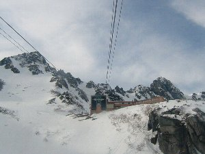
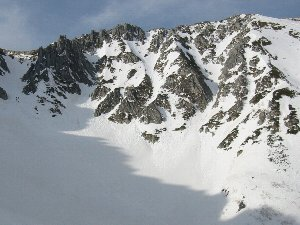

冬の千畳敷 | 2004.2月 |
|---|---|
| 前から一度、冬の雪山に行ってみたかった。しかし、雪山は舐められない！それなりの装備と技術、体力が要求される。 当然、どれも持ち合わせて居ない私は「どう手軽に雪山に行けるか」考えた。答えはロープウェイで標高2,612ｍまで昇ること。（注：スキーの雪山は別として） 中央アルプス駒ヶ岳は標高2,612ｍ（千畳敷）までロープウェイで行ける。しかも通年営業だから冬でもＯＫ！ さらに上には日本一高い（標高が）と自負するホテルが有る。 これほど手軽に冬山に行けるところは無いだろう。って事で友人誘って出発！ 駒ヶ岳は秋に一回行ったことが有る。その時は駒ヶ岳、宝剣岳と昇ったが、冬山は初めて。前述の通り、装備、技術、体力ナイナイ尽くしとしては、ロープウェイに乗ってホテルで一泊が関の山。 秋の混み混みバスと違い、空いているバスに乗車。ただし一時間に一本。ロープウェイも同じ。 天候は曇り。山頂付近など見えない。 ロープウェイが山頂駅にさしかかる頃、山頂駅をバックに雪を頂いた宝剣岳が見える。普段は木の色、土の色、葉の色と様々な色で塗られている景色が、雪の白と、山の地肌の色に塗り分けられている。 | |
|  ロープウェイ山頂駅 |  左の上の方に降りてくる人が見えます |
| 早速ホテルに荷物を置いて、千畳敷カールを歩く。もっと劇的に寒いかと思ったがそれ程でもないが、そこには動植物など何もなく、雪だけ。ホテル周辺で遭難時の訓練をしている集団が居るぐらい。 時折、宝剣の方から人が降りてくる。 その中で５０才ぐらいの女性に「今日は何処に行ってきたんですか？」と聞いて見たら、「宝剣岳ですよ。６時間ぐらいかかったかな」とアイゼン、ヘルメットを付け、背中にはカラビナやヌンチャクをじゃらじゃら装備した女性は気軽に答えた。 夕食。山の上のホテルと言うことで「たいしたものは出ないだろう」と鷹をくくっていたが、夕食は予想に反して豪華だった。魚（イワナかな？）の塩焼き、馬肉やおひたし、鍋やちょっとしたお刺身にデザート。どれも美味しくお腹一杯になった。 夕食後、星を見ようと外に出てみたが、遭難時の為だろうか、山の方を煌々と照らしている明かりが目について、あまり見えない。やはり山の上まで行かねば満点の星を見ることは出来そうにない。 翌朝、日の出の写真を撮ろうと思っていたが、外は雪が降っていた。あきらめて二度寝する。 朝食後も雪はやまず、段々と勢いを増してきたようだ、って言うか吹雪いている！１０メートル先は真っ白になる。朝一のロープウェイで昇ってきたハイキングの人達も、千畳敷きカールを廻るのを断念していた。 ホテルの従業員から、早めに降りないと、ロープウェイが運休になるかもしれない。と言われ早々に下山。今回の旅も終わりとなる。しかし、また来てみたいものだ。 | |
 宝剣岳をバックに。 |  南アルプス方面。富士山も見えるんですが・・・ |
| コメント＆写真／べっしー | |